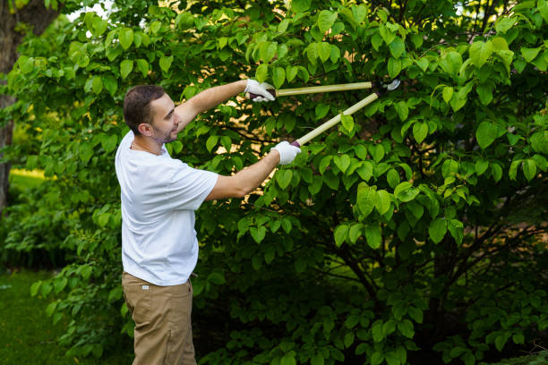

The most dangerous trees on most Utah, UT properties are not the ones leaning toward the house. They are the ones that look completely fine.
Across Utah, UT, a significant portion of residential tree canopy was planted in the post-war decades: silver maples, Bradford pears, pin oaks, and ash trees that are now 50 to 80 years old. At that age, many carry a structural defect that has been building quietly for years. Two main stems grow from the same origin point with compressed bark between them rather than a solid wood union. From the street, those trees look full and healthy. Get up into the crown and you find two halves of the same tree competing for the same space, each pressing against the other, with the structural equivalent of a zipper running between them. One high wind load in the wrong direction and one half comes down without any prior visible warning.
Halsey's Tree Service has worked across Utah, UT long enough to know what hides inside the canopies of the state's older neighborhoods. We assess it, explain what we find, and give you real options: removal, structural cabling to redistribute load before a union fails, or targeted pruning to lower the risk profile on a tree you want to keep. We do not sell work you do not need.
Older residential neighborhoods in Utah, UT share a pattern that is easy to miss from the sidewalk. Trees planted the same decade as the houses are now at or past their structural prime. Post-war suburb plantings favored fast-growing species that were never expected to outlive the homeowners who put them in the ground. Many did. They are now shading backyards across Utah, UT carrying structural load histories no one planned for.
The signs of late-stage structural decline are real, but they are rarely dramatic. A crack in bark where two main stems diverge. Fungal conks, the shelf-like growths that emerge from the lower trunk or at the soil line, which are almost always the above-ground signal of internal column decay that has been working along the heartwood for a year or more. Thinning in the upper crown while the lower canopy looks full, which tells you the tree is pulling resources back from branches it can no longer sustain. Soil upheaval on one side of the trunk base, suggesting a root plate beginning to shift under load.
None of these are cosmetic concerns. They are structural warnings. Halsey's Tree Service reads them for Utah, UT homeowners who would rather know before something happens than explain afterward why they waited.
Whether you are on a tight urban lot in an older Utah, UT neighborhood with mature trees pressed up against a roofline, or on a larger rural property where a storm system can leave significant debris across considerable acreage, we bring the right equipment and the right approach for the site.
Local Tree Removal in Utah, UT. When the assessment says the tree needs to come down, we handle it safely: section by section, with drop zone planning, directional felling or aerial rigging based on what the site requires, and complete debris removal before we leave.
Tree Trimming and Tree Pruning Service. Crown cleaning to pull out deadwood and crossing branches. Targeted pruning cuts made at the branch collar so the tree seals the wound rather than decaying through it. Weight reduction on limbs showing stress at their attachment points or growing at angles that load the union poorly.
Tree Cabling in Utah, UT. For Utah, UT homeowners who want to preserve a mature tree with structural weakness in its crown, we install EHS (Extra High Strength) steel cable between anchor points in each affected stem to redistribute load. Cabling gives trees with codominant stems a significantly extended safe lifespan when the overall tree health supports it.
Emergency Tree Service. Utah, UT weather does not wait for a convenient moment. When a storm puts a tree or major limb somewhere it should not be, we respond. Structure-adjacent removals get done with rigging, not equipment that cannot access a tight side yard.
Stump Grinding in Utah, UT. We grind to depth, fill the cavity with the chip material or haul it off, and leave the area clean and level.
If you have a tree you have been watching, one with a crack in the main stem union, fungal growth at the base you have been calling cosmetic, or a crown that seems thinner than it was a few years ago, get a real answer before the next significant weather event forces one.
Halsey's Tree Service does honest assessments across Utah, UT. We explain what we find, give you genuine options, and let you make the call. (833) 963-0463).

"Halsey's came out to look at a silver maple in the back corner that I knew was old but never worried about. The crew spotted a crack in the main stem union during the walk-around and explained exactly what it meant. Tree came down two days later and the stump got ground the same visit. Thorough, no pressure, no surprises."
"They sent someone out the same afternoon I called about a leaning pine near my garage. He walked me through what he saw and told me the tree was still stable enough for another season and gave me specific things to watch for rather than pushing for an immediate removal. That kind of honest answer from a company that could have easily sold me something I did not need yet was not what I expected."
"Used Halsey's to clean up the canopy on two oaks along the property line I manage. They pruned correctly, with actual cuts at the collar, not the hack-and-stub you see from some crews. Trees look structurally sound. Cleanup was thorough and they were back on schedule the following season."
©